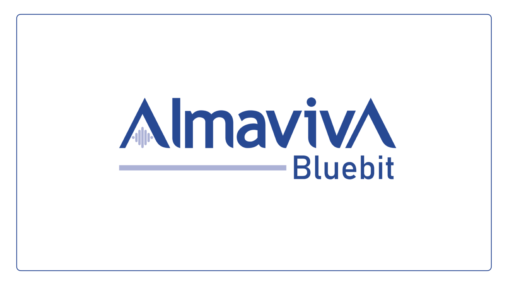
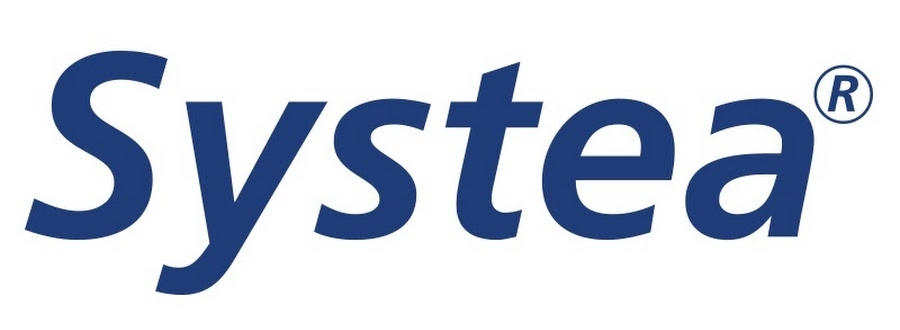
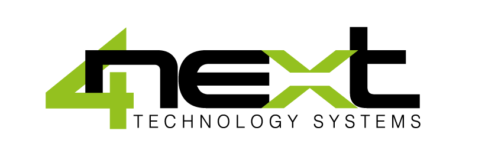

ZERNIKE
PANAMÁ
PANAMÁ
Somos distribuidores exclusivos/autorizados en Panamá de:

Almaviva Bluebit
Medidores fijos/portátiles IP68 para medición de caudal, nivel y presión con telemetría.
Novatest
Sistemas de videoinspección, georadares, medidores de nivel y ecosondas para batimetría.

Sewerin
Sistemas y tecnología para la búsqueda de fugas.
Siapmicros
Estaciones hidrológicas y meteorológicas.

Solinst Eureka
Sondas multiparamétricas para la medición de la calidad del agua.

Systea
Analizadores automáticos de química húmeda para monitoreo ambiental.

4Next
Soluciones digitales para automatización, IoT y M2M.